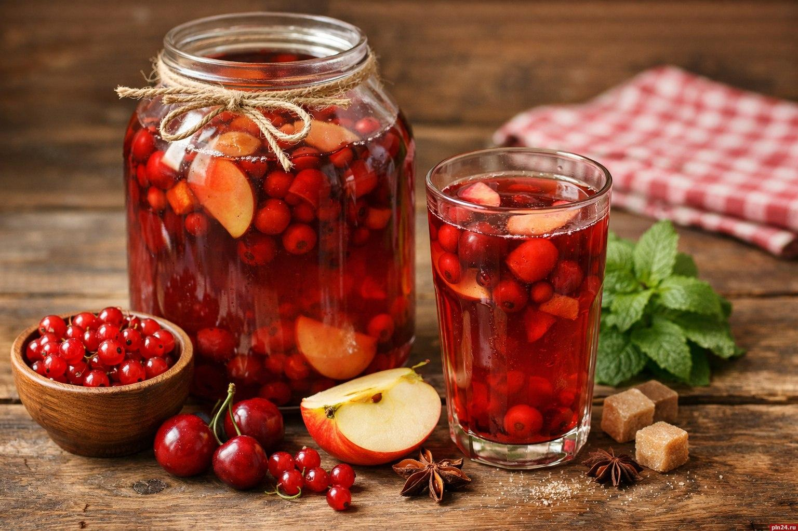

Recetas caseras - Compota líquida de frutas del bosque y manzana
RECETAS CASERAS. Compota líquida de frutas del bosque y manzana

Ingredientes
- 3 manzanas rojas o dulces
- 200 g fresas frescas
- 150 g grosellas negras (o mixtas)
- 2.5 litros agua
- 150 g azúcar (al gusto)
- 1 ramita canela (opcional)
- 1 cucharada zumo de limón
Preparación
- Lavamos bien todas las frutas. Pelamos las manzanas, les quitamos el corazón y las cortamos en gajos o cubos medianos.
- Quitamos las hojas de las fresas y las cortamos por la mitad. Dejamos las grosellas enteras.
- En un caldero grande ponemos los 2.5 litros de agua y añadimos los trozos de manzana junto con la ramita de canela. Esperamos hasta que hierva.
- Cuando empiece a hervir, bajamos a fuego medio y cocinamos la manzana durante unos 10 minutos para que empiece a ablandarse.
- Añadimos al caldero las fresas, las grosellas y el azúcar. Mezclamos bien con una cuchara de madera.
- Dejamos cocinar todo junto a fuego suave durante otros 10-15 minutos. Las frutas deben quedar tiernas pero enteras, sin deshacerse del todo.
- Apagamos el fuego, añadimos la cucharada de zumo de limón para resaltar los sabores y tapamos el caldero. Dejamos reposar hasta que se enfríe por completo.
- Retiramos la ramita de canela antes de servir. Se puede tomar tibio o bien frío de la nevera.